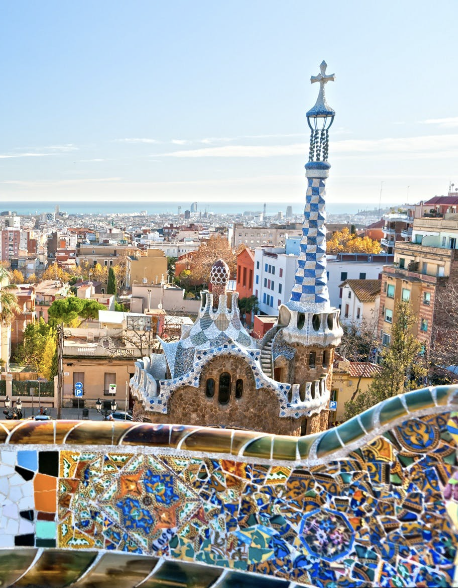

<!DOCTYPE html>
<html lang="nl">

</html>

<head>
  <title>Barcelona</title>
  <meta charset="utf-8" />
  <meta name="viewport" content="width=divice-width,
      initial-scale1" />
  <link rel="stylesheet" href="style/style.csss">
</head>


<body class="bezienswaardigheden">


  <header>
    <h1>Barcelona</h1>
    <h2>Bezienswaardigheden</h2>
    <nav>
      <ul>
        <li><a href="index.html">Home</a></li>
        <li><a href="bezienswaardigheden.html">Bezienswaardigheden</a></li>
        <li><a href="kunst.html">Musea</a></li>
        <li><a href="tips.html">Tips</a></li>
      </ul>
    </nav>
  </header>


  <main>
    <h3>Wat moet je zeker zien en doen als je Barcelona bezoekt? Hieronder een paar van de mooiste en leukste plekken
      die ik heb bezocht.</h3>
    <h2>Sagrada Família</h2>


    

    <h3>Wat is de Sagrada Família?</h3>
    <p>De Sagrada Família is De Sagrada Família is een van de meest beroemde kerken ter wereld en een must voor iedereen
      die Barcelona bezoekt. De bouw van deze modernistische, monumentale kerk begon in 1882,
      maar Antoni Gaudí's meesterwerk is nog altijd niet af.
    </p>
    <h3>Religieuze Betekenis</h3>
    <p> Het is een katholieke kerk en heeft religieuze betekenis. De naam "Sagrada Família"
      betekent "Heilige Familie" in het Catalaans.</p>

    <div>
      
      
    </div>


    <h3>Wat kun je doen bij de Sagrada Família?</h3>
    <p> Je kunt een toegangskaartje kopen en de Sagrada Família van binnen bekijken en meer te weten te komen over de
      geschiedenis en archictectuur. Het interieur is net zo indrukwekkend als de buitenkant. Tip: Koop je tickets ruim
      van te voren, anders kom je er niet in. Het was mij helaas ook niet gelukt.
    </p>

    <h3>Sagrada Familia Museum </h3>
    <p>Onder de basiliek, in de kelder, bevindt zich het Sagrada Família Museum. Hier leer je aan de hand van oude
      beelden en documenten alles over de geschiedenis, de voortgang, de ideeën van Gaudí</p>


    <h2 class="blauw">Park Güel</h2>
    <p>Park Güell met de bekende, kleurrijke mozaïeken is ook één van de highlights van architect Antoni Gaudí. Het park
      werd aangelegd in opdracht van de ondernemer Eusebi Güell. Ruim honderd jaar later is het één van
      Barcelona's grootste toeristische bezienswaardigheden. </p>
    <div>
      
      
      
    </div>
  </main>


  <footer>
    <p> Bezienswaardigheden <a href="https://www.barcelonatips.nl/bezienswaardigheden/sagrada-familia/">barcelonatips
        pagina</a>
    </p>
  </footer>

</body>

</html>